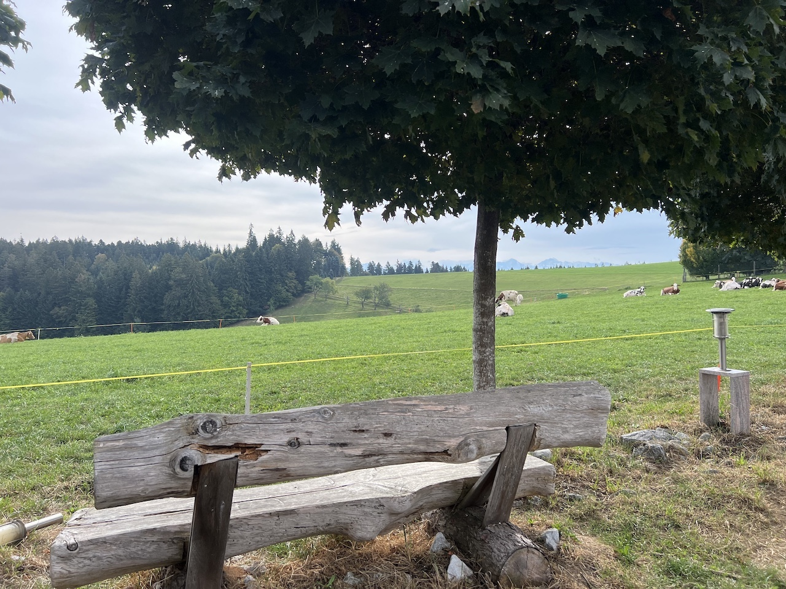
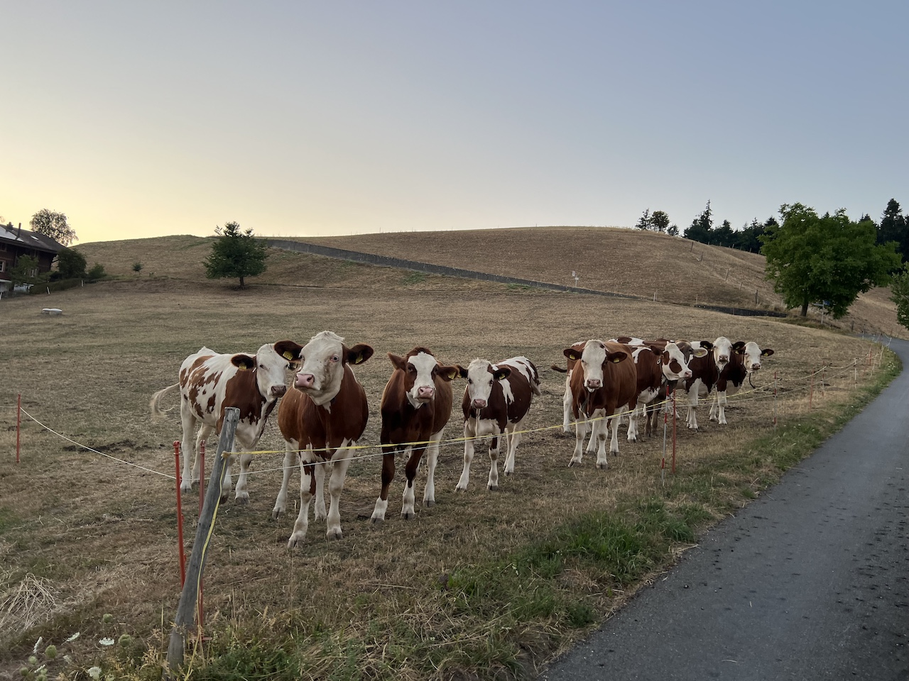

Darum geht's
Willkommen auf der Mänziwilegg! Nimm doch kurz Platz auf einem der gemütlichen Bänkli und lass deinen Blick über das Emmental schweifen. So weit dein Auge reicht, siehst du Grasland, Hügel, Bauernhöfe und Kühe. Hier ist Ackerbau schwierig, deshalb sind Wiederkäuer hilfreich, da sie Gras in Milch und Fleisch umwandeln können Aber wie viele Kühe verträgt das Emmental, und fressen sie wirklich nur Gras?

Du bist nun bereits einige Kilometer im Emmental unterwegs. Wie oft hast du Hecken oder Bäume zwischen den Weiden gesehen? Sie erhöhen die Biodiversität sowie die Bodenstabilität der Hänge, spenden Schatten und Windschutz und können als Futterquelle genutzt werden.
Die Hügellandschaft
Durch Flüsse, die sich in die Landschaft schnitten und Gräben bildeten, entstand die markante Hügellandschaft des Emmentals. Die Landschaft bietet kaum flache Flächen. Deshalb haben sich anstelle von grossen Dörfern viele Einzelhöfe und Weiler gebildet. Steile Hänge und Hügelkämme, sogenannte «Eggen», prägen die Landschaft und beeinflussen ihre Bewirtschaftung stark.
Steile Hänge sind teuer
In steilen Gebieten wird die Arbeit nicht nur anstrengender, sondern auch teurer. Hier kann nicht mit grossen Maschinen gearbeitet werden, es werden Spezialgeräte benötigt, oder die Arbeit muss von Hand erledigt werden. Der Bund zahlt deswegen über die Direktzahlungen je nach Neigung und Anteil Steillagen verschiedene Beiträge aus, um den Mehraufwand auszugleichen. Dazu gehören:
- Offenhaltungsbeitrag
- Hangbeitrag
- Steillagenbeitrag
«Feed no Food» als Lösung
Das Prinzip "Feed no Food" ist grundsätzlich simpel: Tiere sollen nichts essen, was auch wir Menschen direkt essen könnten. Kühe würden also nur noch mit Raufutter (Gras, Heu) gefüttert. Auf den so frei gewordenen Ackerflächen könneen mehr Lebensmittel direkt für die menschliche Ernährung angebaut werden, zum Beispiel Brotgetreide, Bohnen, Erbsen und Linsen. Mit dieser Strategie könnten viel mehr Menschen ernährt werden, während gleichzeitig der Ausstoss von Treibhausgasen stark zurückginge.
Ein paar Zahlen zum Staunen
der landwirtschaftlichen Nutzfläche der Schweiz sind Naturwiesen und Weiden. Zählt man die Kunstwiesen auf Ackerland dazu, sind es sogar 70 %.
Quelle: BFS (2026); Jaisli & Grüter (2024)der landwirtschaftlichen Nutzfläche sind Ackerland. Davon dienen rund 80 % der Futtermittelproduktion.
Quelle: BFS (2026); Jaisli & Aubert (2026)Nutztiere wurden 2025 in der Schweiz gehalten.
Quelle: BFS (2026)des Kraftfutters stammen aus dem Ausland.
Quelle: Jaisli & Trachsel (2026)können die Ertragsverluste auf Grünflächen in extrem trockenen Jahren erreichen.
Quelle: AGRIDEA (2025), S. 1des Futters von Schweizer Rindern ist Kraftfutter oder Mais.
Quelle: Jaisli & Trachsel (2026), VisionPLANT50Andere Möglichkeiten zur Bewirtschaftung von Grasland und Steilhängen
Weide und Mutterkühe
Die Kälber bleiben bei der Mutter, und die Tiere werden häufig auf der Weide gehalten. Das bedeutet weniger Arbeit, da nicht gemolken wird, und mehr Tierwohl, da die Kälber nicht von ihren Müttern getrennt werden. Ein Beispiel, wo solidarische Landwirtschaft gelebt wird, ist der Hof Heimatärde in Arni mit seinen Highland-Rindern.
Extensive Wiesen
Nicht gedüngte, später und seltener gemähte Wiesen ergeben zwar weniger Futter, haben aber einen grossen Vorteil für die Biodiversität. Wird beim Mähen jeweils ein Teil der Wiese stehen gelassen, wirkt sich das positiv auf die Wildbienen aus.
Bäume, Hecken, Hochstamm (Agroforst)
Sie dienen als Schattenspender, Windschutz, Erosionsschutz und Futterreserve. Ein Beispiel ist ein Betrieb aus dem Aargau, der mit Agroforst deutlich besser durch den Sommer 2026 kam als andere Betriebe.
Wald
Wo es zu steil oder zu schattig ist, ist Wald eine Alternative. Mehr dazu erfährst du an Posten 4.
Was, wenn das Emmental im Sommer so aussieht?

Der Sommer 2026 bleibt wohl noch lange in Erinnerung. Schweizweit war es extrem trocken, und auf vielen Wiesen hörte das Gras schon im Juli auf zu wachsen. Dadurch fielen mehrere Schnitte aus. Für eine Region wie das Emmental, die sehr stark vom Grasland abhängig ist, hat das grosse Auswirkungen. Viele Betriebe mussten bereits im Sommer ihre Wintervorräte verfüttern, Heu zukaufen oder Kühe früher schlachten. Mit dem Klimawandel steigt das Risiko für solche Sommer. Ein Lösungsansatz, um die Folgen zu mildern, ist der Einsatz von Futterbäumen. Agroforst verbindet zum Beispiel Weiden mit Bäumen. Davon profitieren die Tiere, die Natur und die Biodiversität.
Was hat das mit Agrarökologie zu tun?
- Effizienz: Wiederkäuer nutzen Flächen und Futter, die Menschen nicht essen können. Feed no Food treibt diesen Gedanken weiter.
- Recycling: Mist und Gülle düngen die Wiesen, auf denen das Futter wächst.
- Vielfalt: Extensive Wiesen, Hecken und verschiedene Tierarten schaffen Lebensräume.
- Widerstandsfähigkeit: Bäume und Hecken liefern Schatten und eine Futterreserve in trockenen Jahren.
- Kreislauf- und Solidarwirtschaft: Patenschaften wie bei Heimatärde verbinden Konsumentinnen und Konsumenten direkt mit dem Hof.
Quelle: FAO, The 10 Elements of Agroecology, eigene Übersetzung
Frage: Was spricht dafür, Kühe vor allem mit Gras vom eigenen Hof zu füttern?
Es braucht weniger Importe, die Nährstoffkreisläufe auf dem Hof bleiben geschlossener, und das Futter konkurriert nicht mit Nahrung für Menschen.
- Erkennst du die Gräben und die Eggen?
- Wiese, Wald, Höfe: Wo liegt was?
- Wie steil schätzt du den steilsten Hang, den du siehst?
- Wie viele Tiere stehen auf der Weide?
Mehr erfahren
- Heimatärde: Solidarische Landwirtschaft in der Tierhaltung
- FiBL: Feed no Food – Es geht auch mit weniger Kraftfutter (2012)
- ZHAW: Schweizer Futtermittelimporte (2021)
- Egli (2017): Die Landwirtschaftsbetriebe im Oberen Emmental (PDF)
- Beobachter: Wie ein Aargauer Bauer der Jahrhundert-Dürre trotzt (2026)